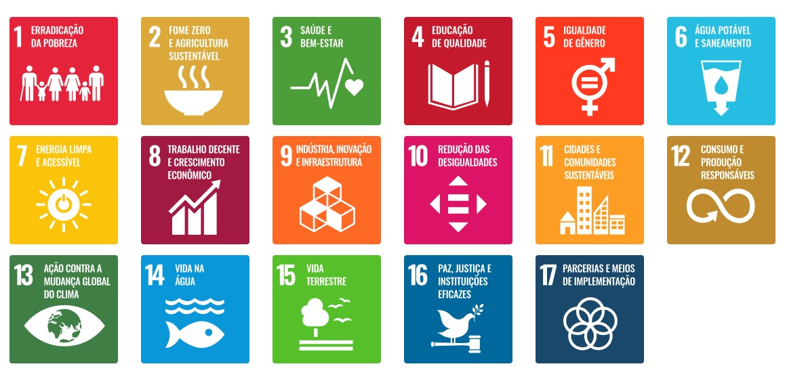
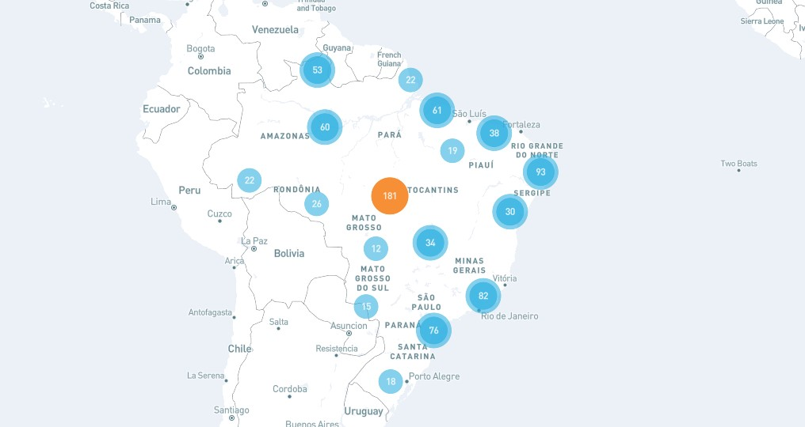

As Nações Unidas e seus parceiros no Brasil estão comprometidos em promover os Objetivos de Desenvolvimento Sustentável (ODS), um conjunto de 17 metas interconectadas que enfrentam os principais desafios de desenvolvimento, tanto no Brasil quanto globalmente.
Os ODS representam um chamado universal à ação, com o objetivo de erradicar a pobreza, proteger o meio ambiente e o clima, e assegurar que todas as pessoas, em qualquer lugar, possam viver em paz e prosperidade. Por meio de seus esforços, a ONU busca contribuir para o cumprimento da Agenda 2030 no Brasil.

Onde trabalhamos: as principais atividades das Nações Unidas no país
A Nações Unidas estão a implementar 316 atividades-chave em localidades

Como se vinculam os Investimentos, os Parceiros e os Objetivos de Desenvolvimento Sustentável no país
Este gráfico mostra como os investimentos contribuem para o trabalho de diferentes agências e parceiros para o avanço dos Objetivos de Desenvolvimento Sustentável no país. A largura das linhas representam a quantidade relativa de recursos contribuídos. Pode usar os filtros para ver como os investimentos são direcionados para diferentes áreas geográficas, Objetivos de Desenvolvimento Sustentável, agências das Nações Unidas e parceiros nacionais de implementação.